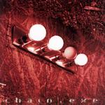

Home Artist links Label link

Chain - Chain.exe
| Artist: | Chain |
| Title: | Chain.exe |
| Label: | Progrock Records |
| Length(s): | 80 minutes |
| Year(s) of release: | 2004 |
| Month of review: | [09/2005] |
Line up
Matt Cash - vocals
Stephan Kernbach - keys
Christian Hacker - bass
Eddie Marvin - drums
Henning Pauly - guitars, banjo, additional bass, programming
with
Michael Sadler - vocals
Mike Keneally - vocals, guitars
Sean Andrews - stunt bass on 9
Steve Katsikas - saxophone
Victoria Trevithick - vocals
Maya Haddi - vocals
Jody Ashworth - vocals
Edward Happenstall - vocals
Tracks
| | Cities | 38.08
|
| 1) | Cities 1 | 7.10
|
| 2) | Cities 2 | 4.46
|
| 3) | Cities 3 | 4.41
|
| 4) | Cities 4 | 6.06
|
| 5) | Cities 5 | 1.06
|
| 6) | Cities 6 | 4.54
|
| 7) | Cities 7 | 9.25
|
| 8) | She Looks Like You | 4.52
|
| 9) | Eama Hut | 9.51
|
| 10) | Never Leave The Past Behind | 10.18
|
| 11) | Hot To Cold | 6.33
|
| 12) | Last Chance To See | 10.12
|
Summary
I was not very impressed with the previous Chain album. This time
around Pauly has managed to obtain the guesting of Sadler of Saga
and the inimitable Mike Keneally. The results...?
The music
The album opens with the seven parted epic, Cities. The opening is
a heavy one with plenty of rhythm guitars and a heavy healthy dose
of rgan. In addition, there are string like synths, that dance through.
The whole has a Middle Eastern feel, and lies between progmetal and Saga, a bit like Everon. After a few minutes we break into a melancholic piano part, with soft acoustic guitar in the back. The vocals are done by Sadler on this
one, who sings in a melodious somewhat hazy fashion.
Then we change over into a passage with progmetal vocals (I assume these
are sung by Cash). His voice is more rowdy. The music is typical American
progmetal: quite complex, lots of things happening, but they do keep it
epic. A bass solo here, a synth run there, shards of organ, you name it.
In fact, the sax solo is quite a surprising element, but it fits well and
avoids having yet another guitar solo. The next is part 2,
in which the music is a combination of the soul of Black Crowes with
progrock. The vocal melody is really good. The women sing backing vocals
here in support. After a short vocal part, we first move into the instrumental
side of things. It is the strings dancing once more. At some point I was
thinking Kansas, but it is mainly the keyboards from the first part returning. Excellent bombast here. Towards the end the soulful, tearful vocals return.
Sadler returns for part 3, a relatively soft spoken one. His are not the only
vocals. Later a female voice sets in, singing in a foreign language and there
is a bit of soprano as well. Pacey and hazy. The final part is brings us
the typical alternation between various instruments, rather fast paced, but
not so melodic. Part 4 brings us to Saga like rhythm guitars. With the more
staccato vocals, we are brought into an orgiasm of instrumental energy.
After that we flow into a Rush/Saga like compact rock song. Good. An acoustic
guitar and piano duet is what follows until we arrive at the guitar solo.
This one could have been a bit more epic. Then the speed picks up for some
fast riffing and running. Part 5 is a short Gentle Giant tribute.
Part 6 has a banjo, acoustic guitar and strong vocals (some of
part 2 returning). One might be reminded of Spock's Beard in a song such
as this, but I think the root of it is Kansas. This part also sees the return
of the dancing strings, which are quite Kansas like. The songs also recalls
the plodding rhythm guitar from yore. And that when we still have the long
finale to go. Part seven is with almost ten minutes the longest. There is
even a bit of Linkin Park style vocals hidden. A high energy closer
with a full sound spectrum: organ, keys, guitar, those strings again and
rather rowdy vocals. At the end, we get a bit of a breather, quite repetitive.
Summarizing, a well constructed epic with the fiddling kept at a minimum. Some excellent recurring passage and melodies and great vocals make this a great
one in the vein of Saga's Generation 13, Magellan and the American progmetal bands.
After all this music, it is difficult to realize that we are not yet halfway.
On the other hand, some (many?) albums from the seventies would be over at
this point.
She Looks Like You is the second actual song. It has Cash on vocals singing
in a moving way. This is a very ballad like opening, a bit sugary, but it
works well enough. That which sets this aside are the rhythms which are stop
and start, and programmed. After one and half minute, the music gains power
with the advent of rhythm guitars. Melodically accessible, but still varied.
It isn't AOR, it is not progmetal, it's not prog, but all three nonetheless.
The closest I come is to mention Ricocher here, but the heavy side is
heavier.
Heavier still is Eama Hut. This is pure progmetal, but the vocals are not
so appealing this time around, at least not at first. The vocals do have a certain groove. The chorus like part has special vocals: there is something of the Red Hot
Chili Peppers in there, a certain rap like element. The solo's can be rather
Kansas like here, but the guitars are generally very violent. Another, less
obvious one, is that this is an American take on Arena.
Strange that this song can grow so much within the space of a few minutes.
This is certainly a different take on prog, mixing it with rock music
outside prog, but only taking such elements that it strengthens, not weakens
the mixture. We end with some easy-going vocals and strumming acoustic
guitar. Well, almost.
Never Leave The Past Behind opens with orchestral vocals, and we run into
a dose of progmetal again. The orchestral qualities bring to mind the
German progmetal bands and Rhapsody, but we are not going over the top that
much. The vocals are vocoded and cold, not so melodic too.
Later, we get both more rowdy and friendly vocals. Regarding variation, this
song maybe has a bit too much, and bit too meandering as well. The song
has its moments, but the composition does not convince.
Hot To Cold opens with repetitive guitar runs and sizzling keyboards.
We have arrived in progmetal territory again. The keys can be string like
again, harkening back to opening epic. This time, we get a Spanish guitar
solo followed by the vocals of Sadler. The song is a very up-beat, very
Latin like. An original approach. The chorus is very Sagaish/AORish.
We end with acoustic guitar in moody fashion.
Closer is Last Chance To See, which surprisingly enough opens with
R&B ballad style vocals by Trevithick. The mandolin playing might be
by Keneally, and the melody is a good, folky one. Now the rhythm guitar set
in, and the music is quite up-beat. Keneally also has a vocal part, he sings
in a spoken fashion. The quirkiness certainly brings Spock's Beard to mind,
but this is not due to a similarity in sound. Although the subject matter
is not a happy one, this song does have a dose of optimism.
Conclusion
Namedropping is easy: Magellan, Saga, Rush Kansas, this is certainly
an American band playing American prog. The result is a big step forward
from their so-so debut. Sadler does good vocal work, but let us not go
Matt Cash unmentioned. His soulful vocals add that extra bit in places.
Plenty of complexity and bombast and good melodies too to convince the
greatest doubter. But remember, the music can be very heavy in places.
© Jurriaan Hage